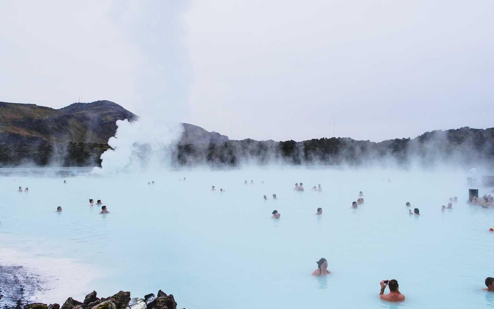
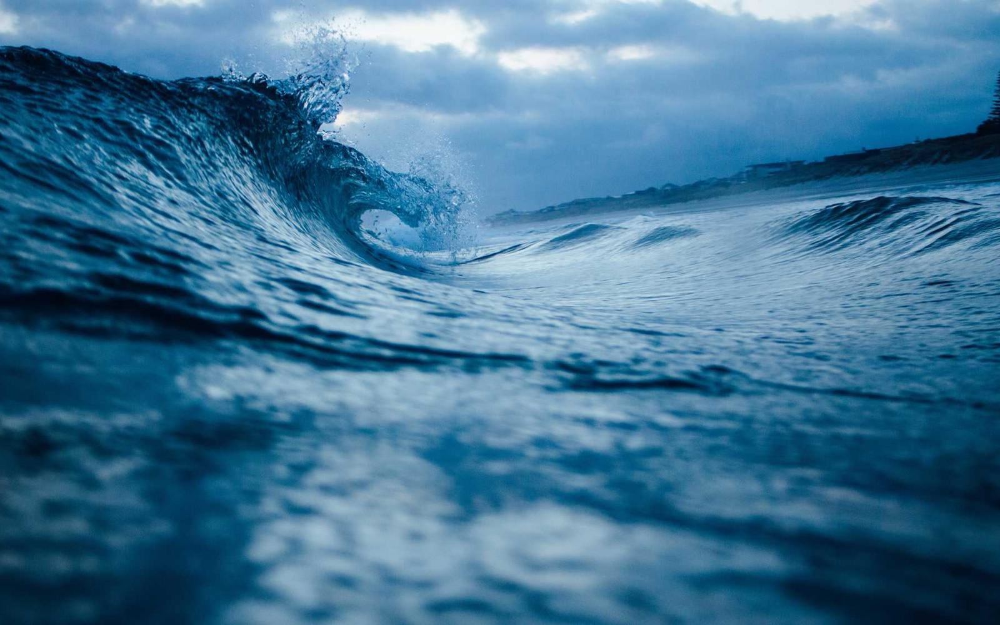
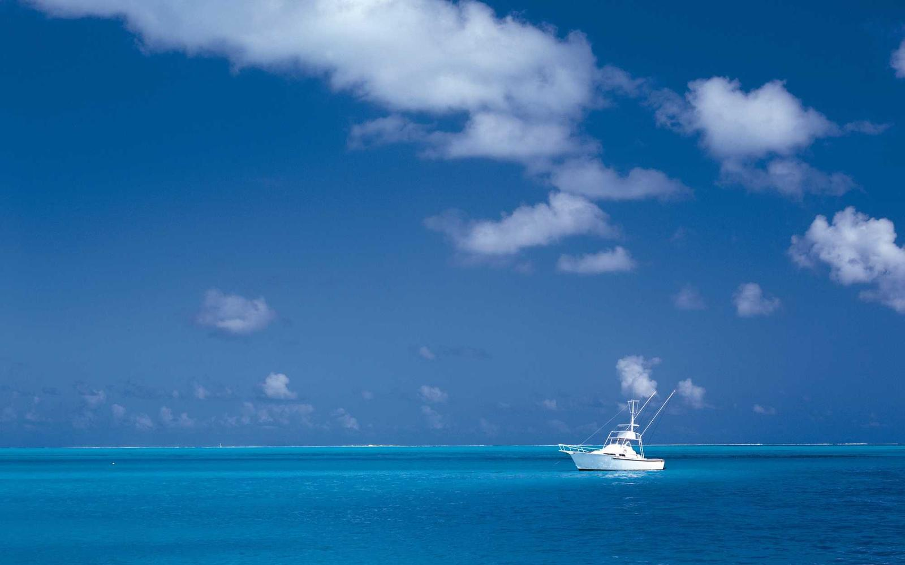
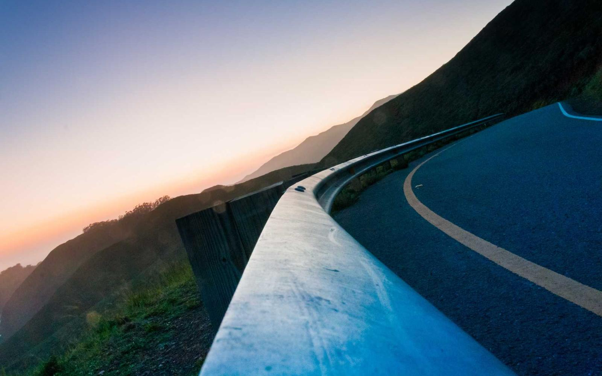
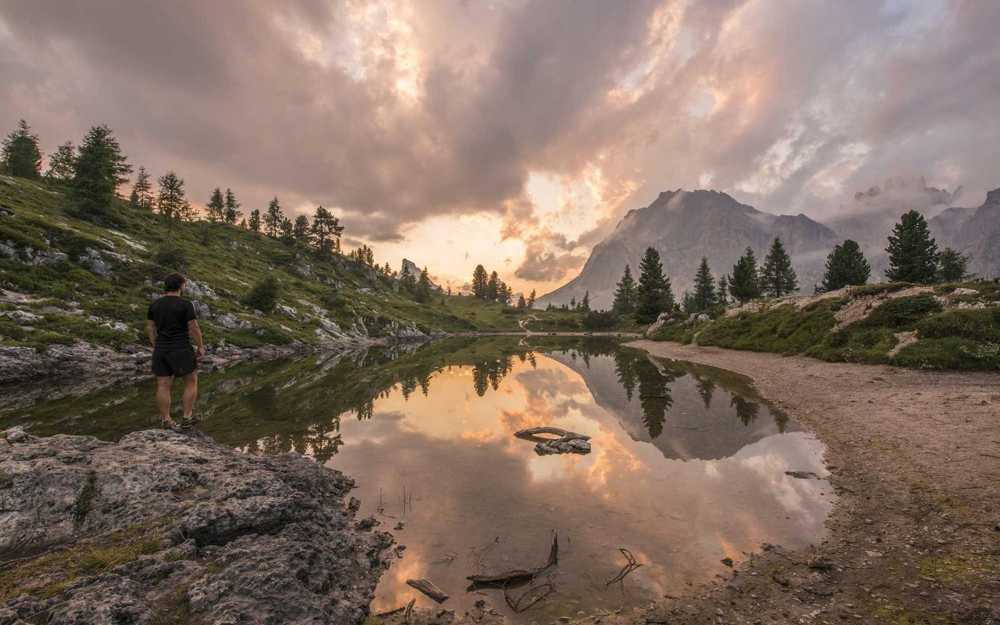

Amazônia






Contexto
A Amazônia em Mato Grosso ocupa o norte do estado, com floresta tropical úmida, rios volumosos e papel central na regulação climática regional.
Desafios de preservação
- Desmatamento e fragmentação por expansão de fronteira.
- Extração ilegal de madeira e garimpo.
- Pressões de infraestrutura e mudanças climáticas.
Fauna e flora
Onça-pintada, araras, preguiças e inúmeras espécies de peixes convivem com castanheiras, seringueiras e árvores de grande porte formando o dossel.
Biodiversidade
Uma das maiores biodiversidades do planeta, com altíssima variedade genética e ecossistemas interconectados.